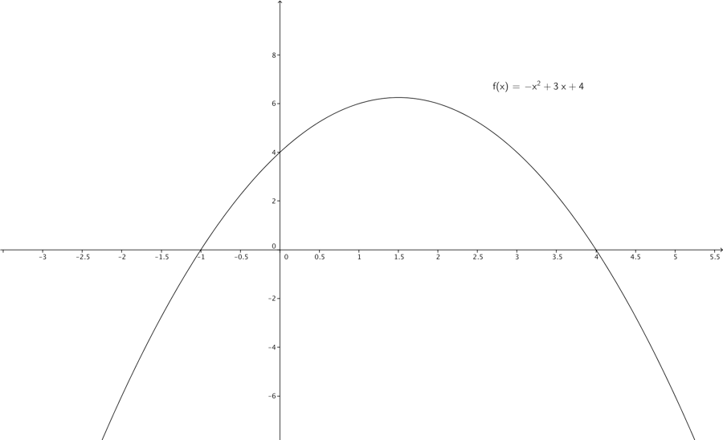
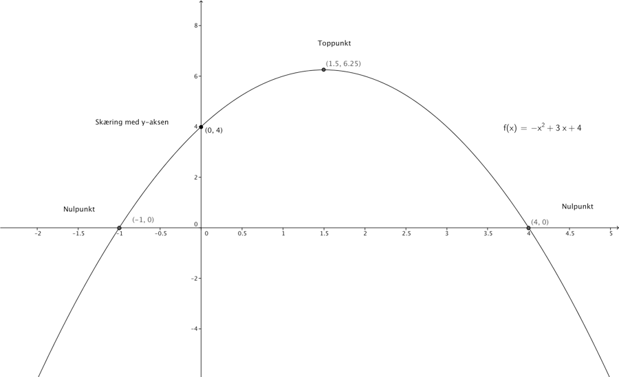

Kapitel 4 Polynomier
Polynomium betyder mange led. Grundformen for et n. gradspolynomium er:
\[f\left( x \right) = a_{n}x^{n} + a_{n - 1}x^{n - 1} + \ldots + a_{1}x + a_{0}\]
\[a_{0},\ldots a_{n} \in \mathbb{R,\ }n \in \mathbb{N,\ }a_{n} \neq 0\ \ \]
Hvor a-erne kaldes koefficienterne, og n angiver graden af polynomiet. Bemærk alle eksponenterne tilhører de naturlige tal.
En lineær funktion f.eks. \(f(x) = 3x + 4\) kan også beskrives som et 1. gradspolynomium. Så er \(a_{1} = 3,a_{0} = 4.\)
\[f\left( x \right) = 4x^{3} + 3x^{2} + 2x + 2\]

Er et 3. gradspolynomium eller en 3. gradsfunktion, polynomiet har navn efter første leds eksponent, der er den største eksponent.
4.1 2. Gradspolynomier
4.1.1 Video 2. Gradspolynomier.
4.1.2 Video Andengradsligninger.
Vi benytter indenfor økonomi gerne 2. gradsfunktioner til at beskrive f.eks. omsætningsfunktioner.
\[f\left( x \right) = - x^{2} + 3x + 4\]
Er et 2. gradspolynomium/gradsfunktion. Kurven vi kan tegne i koordinatsystemet, kalder vi en parabel.

Specielt for 2. gradsfunktioner navngiver vi ofte koefficienterne med a, b og c i stedet for \(a_{2},a_{1}\text{ og }a_{0}\), dvs grundformen er:
\[f\left( x \right) = ax^{2} + bx + c\]
Der gælder at når a som i eksemplet ovenfor er mindre end 0 nemlig -1, siger vi at parablen konkav, eller at grenene/benene vender nedad. Man kan sige grafen krummer nedad. Har 2 gradsfunktionen koefficient \(a\) større end 0, siger vi at parablen konveks eller at grenene vender opad.
Vi definerer diskriminanten som \(d = b^{2} - 4ac\)
For \(f\left( x \right) = 2x^{2} + 3x + 4\) er a=-2, b=3 og c=4. Således bliver diskriminanten \(3^{2} - 4 \cdot - 1 \cdot 4 = 9 + 16 = 25\)
Rødder er de x-værdier for hvilke \(ax^{2} + bx + c = 0\). Nulpunkterne er de punkter hvor polynomiets kurve skærer x-aksen. Antallet af rødder for et 2. gradspolynomium bestemmes af værdien af diskriminanten. Hvis:
| Diskriminanten | Rødder | Parablen |
|---|---|---|
| negativ d<0 | Ingen | Rører ikke x-aksen |
| 0 | 1 dobbeltrod | Spidsen rører x-aksen |
| positiv d>0 | 2 rødder | Passerer x-aksen |
I vores eksempel har vi en positiv diskriminant, man ved derfor at der er 2 rødder, dvs. man ved kurven krydser x-aksen to gange.
Man kan også hurtigt afgøre præcis hvor kurven skærer y-aksen, da er x jo 0. Man ved derfor at leddene \(ax^{2}\text{ og bx}\) vil være 0. Kurven vil derfor skære i y-aksen i c, i vores eksempel (0,4).
Man kan uden at tegne 2. gradsfunktionens kurve afgøre at grenene vender nedad, hvor mange rødder der er, samt hvor på y aksen kurven skærer.
Når vi skal bestemme rødderne og dermed nulpunkterne[^1], kan man benytte følgende formel:
\[x = \frac{- b \pm \sqrt{d}}{2a}\]
I vores eksempel får vi:
\[x = \frac{- 3 \pm \sqrt{25}}{2 \cdot - 2} = \left\{ \begin{matrix} \frac{- 3 + 5}{- 2} = - 1 \\ \frac{- 3 - 5}{- 2} = - \frac{- 8}{- 2} = 4 \\ \end{matrix} \right.\ \]
Det betyder altså at vi har nulpunkterne \(\left( - 1,0 \right)\ og\ (4,0)\).
Vi kan bestemme toppunktet (der hvor parablen vender) ud fra formlen:
\[T = \left( - \frac{b}{2a}; - \frac{d}{4a} \right)\]
I eksemplet får vi:
\[T = \left( - \frac{3}{2 \cdot - 1}; - \frac{25}{4 \cdot - 1} \right) = \left( \frac{3}{2};6\frac{1}{4} \right)\]

Hvis vi ser på 2. gradspolynomiet, \(2x^{2} + 4x + 2\), er diskriminanten \(d = 4^{2} - 4 \cdot 2 \cdot 2\)=0. Derfor har vi dobbeltrod, parablens toppunkt berører (krydser ikke) x-aksen, vi har derfor sammenfald mellem toppunkt og nulpunkt.

Hvis 2. gradspolynomiet, er \(- 2x^{2} - 3x - 2\), har vi diskriminant \(d = - 7\). Derfor har funktionen ingen rødder.